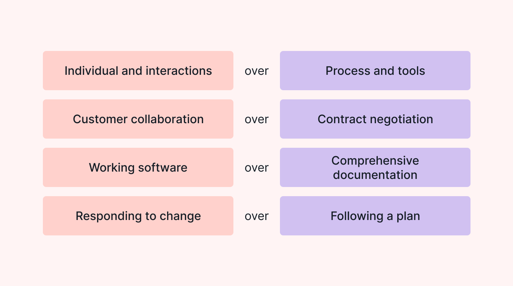
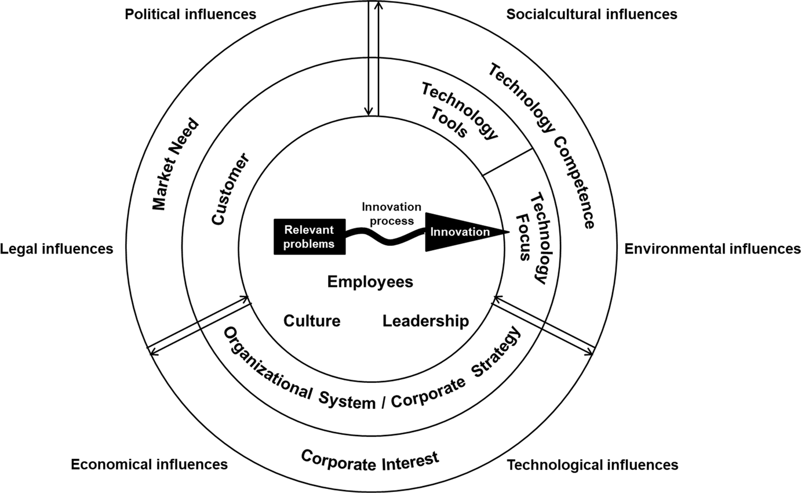

4 Corporate Agility
4.1 Corporate Agility
In the swiftly evolving landscape of modern business, organizational agility stands out as a cornerstone for success. This concept captures a company’s proficiency in adjusting to both internal and external shifts, swiftly catering to customer needs, and spearheading changes that enhance culture, operational practices, and results. Central to agile methodologies is the Agile Manifesto, which prioritizes people and their interactions, functional products, collaborative customer relationships, and adaptability to change over rigid adherence to traditional processes and documentation.

Organizations that successfully integrate these agile principles and nurture an agile culture are better positioned to navigate market dynamics, enhance employee engagement, and secure superior business achievements.
In this game, the king visits his people. However, the king is lazy and wishes to sit down as soon as possible. The people, on the other hand, want to keep the king walking for as long as possible. This is healthy and allows him to meet new subjects.
Objective of the Game: To engage participants in a dynamic and strategic game that simulates leadership, engagement, and collective strategy.
Participant Instructions:
- Setting Up the Game:
- The trainer is the king and selects one person from the group as his aide. The rest of the group represents the people.
- An equal number of chairs as there are common subjects, plus one extra, are placed around the space. The chairs are randomly distributed throughout the area with enough space between them to allow for movement.
- Commencing the Game:
- When the game starts, all subjects are seated, and one chair is left empty.
- The king walks toward the empty chair.
- To prevent the king from sitting down, one subject stands up and attempts to occupy the empty chair before the king reaches it.
- However, this action leaves another chair empty, and the king proceeds towards it.
- Again, a subject stands up to occupy that chair, and so on.
- Concluding the Round:
- The round ends when the king finally sits down.
- After each round, take a moment to discuss as a group (without the king and the aide) how you can improve your strategy to keep the king moving longer in the next round.
- Abiding by the Rules:
- Only the appointed aide may communicate directly with the king.
- Chairs should remain in their initial positions throughout the game.
- All movements should be dignified and orderly; running, pushing, pulling, or blocking is not allowed.
- As soon as you rise from your chair, you must begin to walk.
- Reflecting on the Experience:
- After the game, reflect on the group’s performance, the clarity of communication, and the engagement of each participant.
- Discuss what strategies and approaches were effective in keeping the king moving and why.
The organizational agility conceptual map by Walter (2021) is designed to illustrate the key components and relationships within the concept of organizational agility (OA). The map is based on the original framework of Sharifi and Zhang (1999), which has been expanded and enriched with new insights. The map consists of four main categories:
- Agility drivers: These are environmental changes that put organizations in a new, vulnerable position and necessitate searching for competitive advantages. They include customer-driven agility drivers, external changes only, and external and internal changes.
- Agility capabilities: These are specific abilities for providing the required power and competence to react to changes. They include responsiveness, competency, flexibility, and speed.
- Agility enablers: These are the elements that help organizations realize their agility capabilities. They are the means by which agility capabilities are implemented in various agility dimensions.
- Agility dimensions: These are the various areas in which agility capabilities are implemented, such as supply chain, workforce, business processes, strategy, information systems, and facilities.

The map shows the relationships between these categories, with agility drivers inducing the need for agility capabilities of the organization, which are realized by agility enablers, and agility capabilities being implemented in various agility dimensions, resulting in an overall enhanced organizational agility level. An increased OA level of the organization can contribute to an increase in competitiveness.
The Extended Agile Front End of Innovation Framework Brand et al. (2021) proposes a comprehensive model to enhance agility in the initial stages of the innovation process. This framework integrates findings from literature review and qualitative expert interviews to identify and detail key agility enablers that influence the front end of innovation.
At its core, the framework emphasizes the significance of adaptability, customer focus, empowerment, collaboration, and continuous improvement as fundamental principles. These principles are derived from agile methodologies and tailored to suit the context of innovation management, particularly in the early phases where ideas are generated, evaluated, and developed into potential projects.
Adaptability: The framework underscores the importance of an organization’s ability to swiftly respond to changes in market conditions, technology, and customer needs. This involves flexibility in thinking, processes, and the allocation of resources to explore new opportunities and pivot when necessary.
Customer Focus: Central to the agile approach is the prioritization of customer satisfaction and engagement. The framework advocates for continuous interaction with customers to gain insights into their needs and preferences, which guides the innovation process and ensures that the outcomes are aligned with market demands.
Empowerment: Teams and individuals are empowered to make decisions, take ownership of projects, and drive them forward. This empowerment is facilitated by a supportive leadership style and an organizational culture that values initiative, creativity, and accountability.
Collaboration: The framework highlights the role of collaboration among cross-functional teams, enabling the sharing of knowledge and skills. This collaborative environment fosters innovation by bringing together diverse perspectives and expertise to tackle challenges and explore new ideas.
Continuous Improvement: Regular reflection on processes, strategies, and outcomes is encouraged to foster a culture of continuous learning and improvement. This involves iterative development, where feedback loops are used to refine ideas and approaches based on real-world insights and experiences.

The Extended Agile Front End of Innovation Framework aims to provide organizations with a structured yet flexible approach to navigating the complexities of the innovation process. By adopting these agility enablers, firms can enhance their capacity to innovate effectively, adapt to rapidly changing environments, and achieve sustained competitive advantage.
4.2 Business Case
4.2.1 The Spotify Model
The case study of a telecommunications company grappling with the challenges of outsourced IT development and a lack of internal competence presents a compelling narrative on the importance of organizational agility. Faced with the urgent threat posed by Google’s strategic move into customer contact via APIs, the company found itself in a dire need for transformation. This situation underscores the criticality of agility in responding to market pressures and competitive threats. The urgency to adapt and innovate became a catalyst for change, illustrating how external challenges can drive organizations to reevaluate their operational models and embark on agile transformations.
This journey towards organizational agility involved addressing deep-rooted issues such as the overabundance of coordinators versus engineers, lack of transparency, and a disconnection from the development process. The initiative to bring about change was not merely about adopting new labels like ‘squads’ and ‘tribes’ but involved a fundamental shift in how problems were solved and decisions were made. The move towards empowering teams to solve customer problems and the focus on developing a shared purpose highlight the transformative power of agile principles. This case illustrates that organizational agility extends beyond the adoption of agile methodologies at a team level—it requires a holistic change in culture, leadership, and strategy, aimed at enhancing responsiveness, fostering innovation, and ultimately securing a competitive advantage in a rapidly changing business environment.